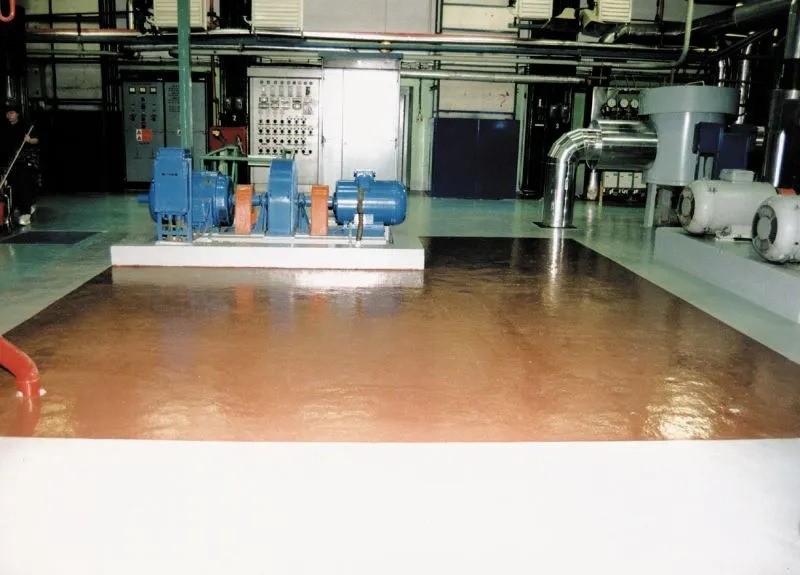
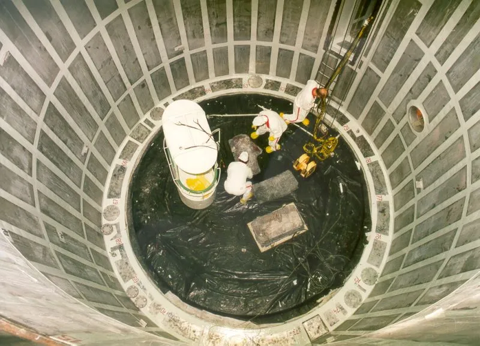
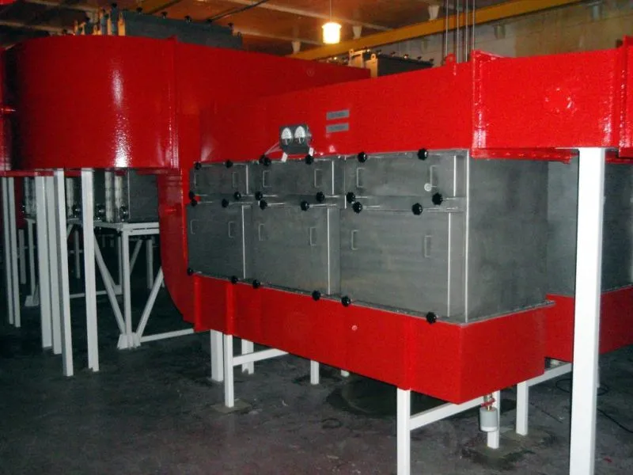

Ochrana betónu a podláh
Chladiace veže, komíny, nádrže, strojovne a priestory s vysokým mechanickým či chemickým zaťažením.
Vybrané realizácie
Zverejnené referencie dokumentujú práce v energetike, jadrovej energetike, hutníctve, chemickom, papierenskom aj výrobnom priemysle.
Rozsah skúseností
Nižšie sú zhrnuté iba projekty a údaje zverejnené na pôvodnom webe spoločnosti.

Chladiace veže, komíny, nádrže, strojovne a priestory s vysokým mechanickým či chemickým zaťažením.

Nátery a polymérkompozitné systémy pre technologické zariadenia, nádrže, zvary a oceľové plochy.

Stacionárne aj mobilné filtračné jednotky, rekonštrukcie vzduchotechnických uzlov a dodávky filtračných vložiek.
Ochrana betónu
Pôvodný web uvádza viac ako 750 000 m² opravených chladiacich veží a komínov od roku 1994 a približne 120 000 m² podláh od roku 1996.
Ochrana kovov
Spoločnosť na pôvodnom webe opisuje patentovanú technológiu pretesnenia zvarov nerezových oblicoviek a viacročné realizácie v jadrovej energetike.
Filtrácia a údržba
Pôvodný web dokumentuje rekonštrukcie filtračných uzlov v atómových elektrárňach typu VVER, mobilné jednotky MoFi a riešenia s meraním diferenčného tlaku, kontrolou tesnosti a BIBO výmenou filtračných vložiek.
Organizácie v referenciách
Uvedenie názvu neznamená tvrdenie o aktuálnej spolupráci; ide o historické realizácie zverejnené firmou.
JAVYS, a.s.; Atómové elektrárne Jaslovské Bohunice a Mochovce; elektrárne Nováky; viaceré vodné elektrárne.
U. S. Steel Košice; Slovnaft a.s.; Gumárne Púchov; Vetropack Nemšová; John Manville.
Martinská tepláreň; Žilinská tepláreň; Papierne Ružomberok; Slovenské cukrovary.
Podobná požiadavka?
Popíšte problém, zariadenie, médium, namáhanie a požadovaný termín.